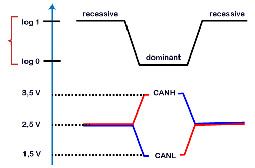
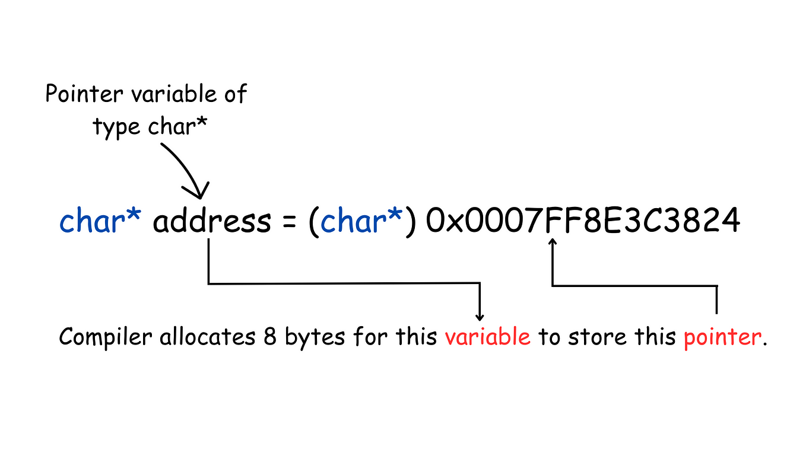
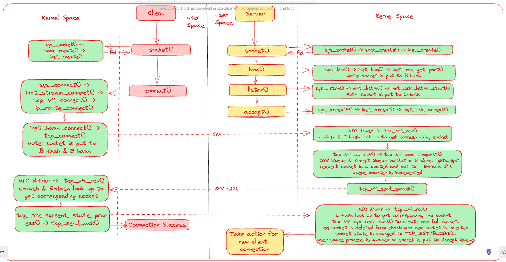
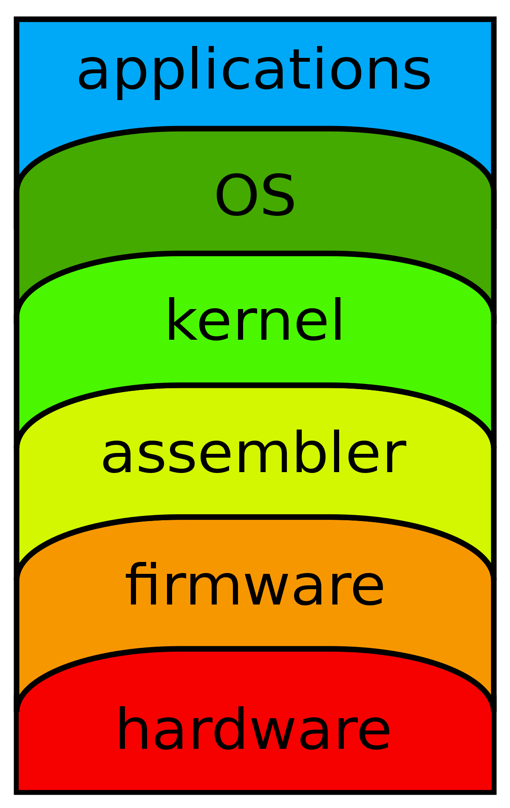

Open in app
Sign up
Sign up

CAN Protocol in STM32 Part-II
3 min read
·
Jun 11
In Previous part we have seen the brief about CAN protocol how it get used and how it get implemented in the CAN peripheral and There CAN Tx and CAN Rx .
We had seen that there are CAN Identifier RTR(Remote Transmission Request) IDE (Identifier ) for Standard ID or Extended ID
And Other part such as DLC (Data length) DataField CheckSum DEL CRC ACK DEL is the Acknowledgement part then EOF( End Of File) ITM(Interrupt manipulation) Bus Idle (Bus Matrix)
. Here the BAUD RATE is set to 500000bps. You can try different combinations for Prescalar and Time Quanta to achieve this.
. The Operating Mode is NORMAL Mode.
. Pins are PA11 and PA12 are set as CAN_RX and CAN_TX
Also there is 120 ohms Resistance at each node. This is very important, or else you will not get the data.
in main.c USER BEGIN 0
CAN_TxHeaderTypeDef TxHeader; // TxHeader Store information like RTR,DLC,etc.
uint8_t TxData[8]; // To store the data, that we are going to transmit over the CAN bus
uint32_t TxMailbox; // TxMailbox will sent to the CAN bus.
Now we will store the required values in the TxHeader and in the TxData.
TxHeader.IDE = CAN_ID_STD; // setting ID to Standard ID
TxHeader.StdId = 0x446; // Identifier
TxHeader.RTR = CAN_RTR_DATA;// Setting Remote Transmission Request
TxHeader.DLC =2;//Data Length of Data bytes
TxData[0] = 50;
TxData[1] = 0xAA;
Now we have the information ready to be transmitted now we will finally transmit it on the CAN bus.
if( HAL_CAN_AddTxMessage(&hcan1, &TxHeader, TxData,&TxMailbox) != HAL_OK)
Error_handle();
Filter Configuration
In Order to reduce the CPU Load to filter out messages , the STM32 have the filters built inside the CAN peripheral.
CAN_FilterTypeDef canfilterconfig;
canfilterconfig.FilterActivation = CAN_FILTER_ENABLE;//we want to enable filter or not
canfilterconfig.FilterBank = 18; // filter bank 20 in single can peri you can choose 0 to 13
canfilterconfig.FilterFIFOAssignment = CAN_FILTER_FIFO0;// FIFO0 and FIFO1 so choosing it
canfilterconfig.FilterIdHigh = 0x446 << 5 ;// Register for 16 bits it compare to incoming identifier
canfilterconfig.FilterIdLow =0 ; // Register for 8 bit compare to identifier
canfilterconfig.FilterMaskIdHigh = 0x446 << 5; // Masking the identifier it enable the comparison
canfilterconfig.FilterMaskIdLow = 0x0000; // Masking the filter ID low
canfilterconfig.FilterMode = CAN_FILTERMODE_IDMASK; //MASK MODE in Filter in STM32
canfilterconfig.FilterScale = CAN_FILTERSCALE_32BIT;
canfilterconfig.SlaveStartFilterBank = 20; // dual CAN peripheral have 28 Filter Banks
HAL_CAN_ConfigFilter(&hscan1, &canfilterconfig);
RECEIVING DATA
For recieving the data in STM32
if (HAL_CAN_ActivateNotification(&hcan1, CAN_IT_RX_FIFO0_MSG_PENDING) != HAL_OK)
{
Error_Handler();
}
CAN_RxHeaderTypeDef RxHeader;
uint8_t RxData[8];
void HAL_CAN_RxFifo0MsgPendingCallback(CAN_HandleTypeDef *hcan)
{
if (HAL_CAN_GetRxMessage(hcan, CAN_RX_FIFO0, &RxHeader, RxData) != HAL_OK)
{
Error_Handler();
}
if ((RxHeader.StdId == 0x103))
{
datacheck = 1;
}
you can use like this also and you can compare it to the Identifier of the RxHeader
if it is true you can turn on GPIO’s pin
if (datacheck) { HAL_GPIO_WritePin(GPIOA, GPIO_PIN_5, GPIO_PIN_SET); } // checking datacheck
` <https://archive.ph/o/CnMQt/https://medium.com/tag/can-protocol>`__
Can Protocol
` <https://archive.ph/o/CnMQt/https://medium.com/tag/embedded-systems>`__
Embedded Systems
` <https://archive.ph/o/CnMQt/https://medium.com/tag/software-engineering>`__
Software Engineering
` <https://archive.ph/o/CnMQt/https://medium.com/@harshdixit1981>`__ .. rubric:: Written by
Harshdixit :name: written-by-harshdixit
Follow
More from Harshdixit
` <https://archive.ph/o/CnMQt/https://medium.com/@harshdixit1981/can-protocol-in-stm32-97bac5a6f521>`__

` <https://archive.ph/o/CnMQt/https://medium.com/@harshdixit1981>`__
Harshdixit
` <https://archive.ph/o/CnMQt/https://medium.com/@harshdixit1981/can-protocol-in-stm32-97bac5a6f521>`__
CAN Protocol in STM32
CAN( Controlled Area Network ) Protocol is a way of communication between different devices, but under certain rules. These rules must be…
` <https://archive.ph/o/CnMQt/https://medium.com/@harshdixit1981/can-protocol-in-stm32-97bac5a6f521>`__
5 min read·Jun 9
` <https://archive.ph/o/CnMQt/https://medium.com/@harshdixit1981>`__
Harshdixit
Difference Between Reg And Wire In Verilog
“Wire” elements must be continuously driven by something, and cannot store a value. Henceforth, they are assigned values using continuous…
2 min read·Mar 16
` <https://archive.ph/o/CnMQt/https://medium.com/@harshdixit1981>`__
Harshdixit
RTOS Programming in Keil IDE for STM32F401RE
Hi , In previous we had talk about the RTOS and what is RTOS ? and what are its type ?
4 min read·Sep 6
` <https://archive.ph/o/CnMQt/https://medium.com/@harshdixit1981>`__
Harshdixit
Coding Pulse width Modulation from microcontroller STM32F103C8Tx
Read my first article before jumping to this article and also take out your pen and notes with me to calculate frequencies , prescalar …
4 min read·Aug 20
` <https://archive.ph/o/CnMQt/https://medium.com/@harshdixit1981>`__
See all from Harshdixit
Recommended from Medium


` <https://archive.ph/o/CnMQt/https://medium.com/@kshitijvaze>`__
Kshitij Vaze
Reviewing My Journey Through Embedded Systems So Far
MY JOURNEY THROUGH EMBEDDED SYSTEMS
5 min read·Oct 7
` <https://archive.ph/o/CnMQt/https://medium.com/@shathiralakdilu/pointers-in-embedded-c-a7afa851c84a>`__


` <https://archive.ph/o/CnMQt/https://medium.com/@shathiralakdilu>`__
Shathira Lakdilu
` <https://archive.ph/o/CnMQt/https://medium.com/@shathiralakdilu/pointers-in-embedded-c-a7afa851c84a>`__
Pointers in Embedded C
Pointers play a crucial role in memory management, serving as variables that hold the address of another variable and enabling the…
` <https://archive.ph/o/CnMQt/https://medium.com/@shathiralakdilu/pointers-in-embedded-c-a7afa851c84a>`__
3 min read·Nov 6
Lists
` <https://archive.ph/o/CnMQt/https://eddiebarth.medium.com/list/general-coding-knowledge-f2d429d4f0cd>`__

General Coding Knowledge
20 stories·696 saves


Stories to Help You Grow as a Software Developer
19 stories·641 saves
` <https://archive.ph/o/CnMQt/https://eddiebarth.medium.com/list/leadership-0cc0d07e2706>`__

Leadership
39 stories·180 saves
` <https://archive.ph/o/CnMQt/https://medium.com/@breanamjones/list/good-product-thinking-25dfb3a0bd21>`__

Good Product Thinking
11 stories·388 saves

` <https://archive.ph/o/CnMQt/https://medium.com/@anthony0604>`__
Anthony Wang
Virtual Destructors & Inheritance in C++
When we work with inheritance, the order of calling constructors and destructors can be summarized as the following:
3 min read·Aug 15


` <https://archive.ph/o/CnMQt/https://medium.com/@lanceharvieruntime>`__
Lance Harvie
Digital Signal Processing (DSP) in Embedded Systems
Digital Signal Processing (DSP) plays a vital role in modern technology. As an essential component of various electronic devices and…
10 min read·Aug 14
` <https://archive.ph/o/CnMQt/https://medium.com/@dd.identity/tcp-handling-in-linux-cc864f35818b>`__


` <https://archive.ph/o/CnMQt/https://medium.com/@dd.identity>`__
Dipak Kr das
` <https://archive.ph/o/CnMQt/https://medium.com/@dd.identity/tcp-handling-in-linux-cc864f35818b>`__
TCP handling in Linux
In the last article I explained packet flow in the linux kernel and netfilter hooks. This time I’ll zoom in to the TCP part of the network…
` <https://archive.ph/o/CnMQt/https://medium.com/@dd.identity/tcp-handling-in-linux-cc864f35818b>`__
9 min read·Dec 12
` <https://archive.ph/o/CnMQt/https://medium.com/@TheAnshuman/what-is-firmware-and-kernel-4115708ac4f4>`__

` <https://archive.ph/o/CnMQt/https://medium.com/@TheAnshuman>`__
Anshuman bansal
` <https://archive.ph/o/CnMQt/https://medium.com/@TheAnshuman/what-is-firmware-and-kernel-4115708ac4f4>`__
What is Firmware and Kernel ?
Previouly we have used Firmware and Kernel both so lets understand indepth difference.
` <https://archive.ph/o/CnMQt/https://medium.com/@TheAnshuman/what-is-firmware-and-kernel-4115708ac4f4>`__
3 min read·Sep 16
` <https://archive.ph/o/CnMQt/https://medium.com/>`__
See more recommendations
` <https://archive.ph/o/CnMQt/https://medium.statuspage.io/>`__
Status
` <https://archive.ph/o/CnMQt/https://medium.com/about>`__
About
` <https://archive.ph/o/CnMQt/https://medium.com/jobs-at-medium/work-at-medium-959d1a85284e>`__
Careers
` <https://archive.ph/o/CnMQt/https://policy.medium.com/medium-privacy-policy-f03bf92035c9>`__
Privacy
` <https://archive.ph/o/CnMQt/https://policy.medium.com/medium-terms-of-service-9db0094a1e0f>`__
Terms
` <https://archive.ph/o/CnMQt/https://speechify.com/medium>`__
Text to speech

{kind=link}
{kind=link}
{kind=link}
{kind=link}
{kind=link}
{kind=link}
{kind=link}
{kind=link}